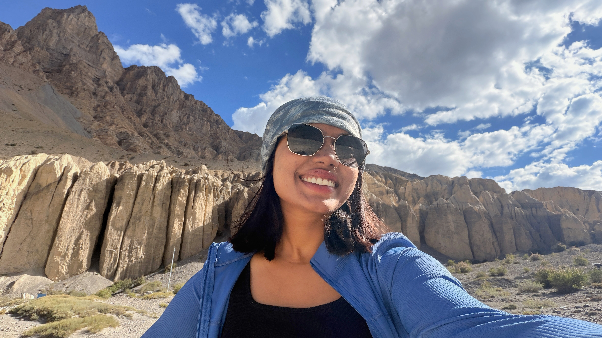
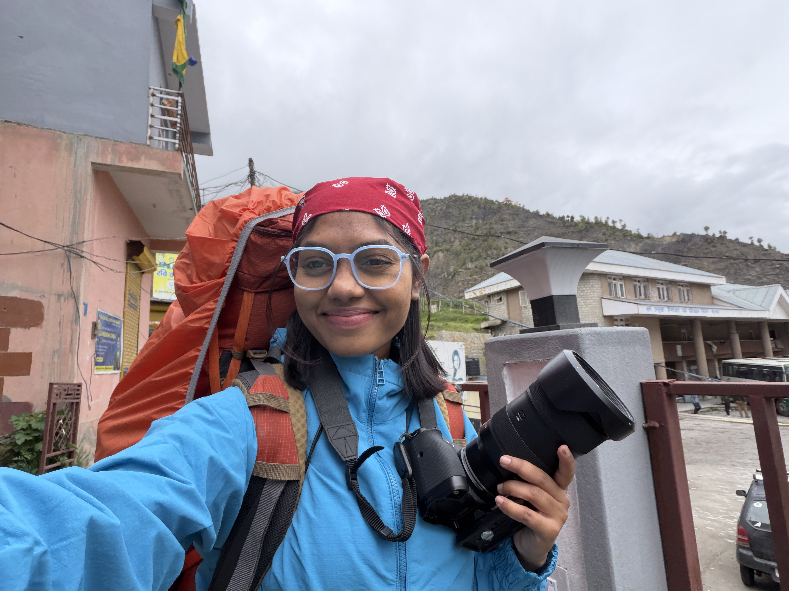

Himalayan Pass · 14,000ft
The Frozen Ridge
Capturing the raw tension and quiet solitude of mountaineers pushing beyond the snowline.
I craft cinematic rhythms, high-altitude expedition documentaries, and visual stories that pull audiences inside the frame and refuse to be forgotten.

Himalayan Sanctuary · Solitude & Atmospheric Tones
From extreme altitude mountain expeditions to rhythmic short films and brand narratives. Every project is sculpted with purpose.
Capturing the raw tension and quiet solitude of mountaineers pushing beyond the snowline.
Sculpting natural light, atmospheric mists, and the heavy breathing space of alpine forests.

Where geometric canyon walls meet rapid rhythmic cuts and tactile geological texture.

Micro-documentary formats engineered for immediate immersion and high audience retention.

Where silence speaks as loudly as sound — patient pacing capturing Himalayan rhythm.
I’m Smriti Sardar — video editor, cinematographer, and visual storyteller based in India. I believe editing is the final rewrite of any story.
Whether sorting hundreds of gigabytes of raw 4K footage inside a windy tent in Spiti or fine-tuning the millisecond breath before a line of dialogue in the studio, my goal is always the same: make the cut disappear so the emotional truth hits you square in the chest.
Every cut must serve the narrative arc. No empty flashy transitions without emotional purpose.
Great video is 50% what you hear. I treat audio layers, foley, and score as the invisible spine of the edit.
Equally at home inside an editing suite or filming across 15,000+ ft glacial passes in sub-zero weather.
Industry-standard post-production suites paired with field-tested cinema hardware.
Tailored post-production and cinematography services shaped around the needs of each narrative.
Long-form storytelling, documentary assemblies, pacing, and emotional coherence.
From hundreds of hours of raw footage to an intentional, razor-sharp narrative. I structure documentary reels, brand films, and personal documentaries with airtight continuity, emotional arc development, and seamless music integration.
Node-based grading in DaVinci Resolve Studio to establish distinctive visual mood.
Color is emotional shorthand. Using color space transforms, custom curves, skin-tone isolation, and organic film grain emulation, I give your film a unified, cinematic palette tailored to the story’s climate.
Hook-first pacing, sound design, and visual rhythm for YouTube Shorts & Instagram.
In a world of infinite scrolling, every millisecond counts. I craft short-form vertical edits that hook attention in the first 2 seconds with seamless loop transitions, energetic beat matching, and kinetic typography.
On-location shooting in remote mountainous terrain and high-altitude wilderness.
Equipped and acclimated for remote expedition filming across extreme weather, altitudes above 15,000 ft, and minimalist battery management. I bring back crisp, intentional cinema frames where standard crews cannot go.
"Smriti brings a rare cinematic sensibility to every timeline. She doesn’t just piece together footage; she extracts the exact emotional tempo we felt on the mountain."
"Her pacing and sound design took our travel campaign from standard video to an immersive experience. Turnaround was swift, and the color grade was breathtaking."
"Smriti understands the internet’s rhythm without sacrificing aesthetic standards. Our reels hit over 2 million organic views thanks to her sharp opening hooks."
Have a documentary, an adventure film, a brand campaign, or a wild visual idea? Send a message and let’s shape it into a cinematic reality.